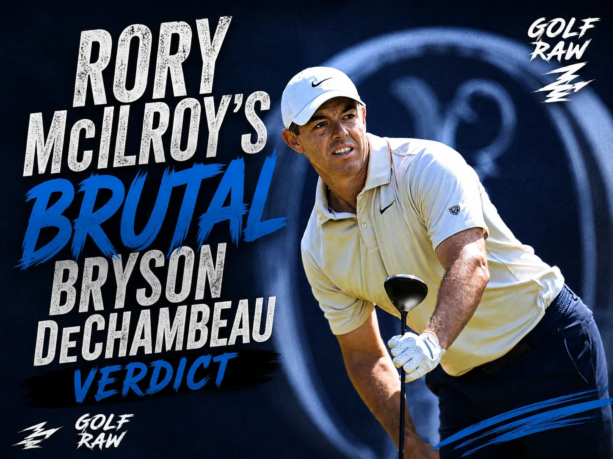

Quick Verdict: Rory McIlroy said Bryson DeChambeau’s response to his two-shot Open Championship penalty was “performative” and “for attention,” adding that he is “not particularly fond” of him. McIlroy also said the penalty was justified after DeChambeau was ruled to have inadvertently improved the area of his intended swing on the fifth hole at Royal Birkdale.

What did Rory McIlroy say about Bryson?
Rory McIlroy delivered an unfiltered critique of Bryson DeChambeau, labeling his rules debate as attention-seeking and performative behavior that delayed the tournament.
McIlroy did not hide behind polite press conference conventions when asked about the controversy. He stated plainly that he had no intention of defending DeChambeau, noting that he is not particularly fond of him and views much of his public persona as a performance for attention. McIlroy argued that the drama surrounding the ruling ended up holding the tournament hostage as officials, volunteers, and players waited for a resolution late Friday evening.
The critique focused less on DeChambeau's right to discuss a ruling and more on the public spectacle that followed it. McIlroy’s comments highlight a persistent friction between the two major champions, both of whom remain comfortable under the media spotlight but carry starkly different philosophies on player conduct and rules compliance.
Why was DeChambeau penalized?
Bryson DeChambeau was assessed a two-stroke penalty under Rule 8.1 for inadvertently improving the conditions affecting his stroke on the fifth hole.
The penalty occurred during the second round as Bryson DeChambeau played his second shot from the heavy rough on Royal Birkdale's par-4 fifth hole. The R&A determined that DeChambeau had bent or moved growing natural objects in a manner that improved the area of his intended swing. Under the strict wording of Rule 8.1, players must take the least intrusive course of action when taking a stance, and they are not guaranteed a normal swing path when recovering from difficult lies.
The ruling was delivered after DeChambeau completed his round, changing his bogey five into a triple-bogey seven. This adjustment proved costly, moving his card from a 66 to a 68 and shifting his tournament score from seven-under to five-under. The penalty dropped DeChambeau out of the final pairing for the third round, altering the entire leaderboard dynamics heading into the weekend.
| Issue | What happened |
|---|---|
| Hole | No. 5 at Royal Birkdale, during DeChambeau’s second round. |
| Ruling | He inadvertently improved the area of his intended swing. |
| Rule | Rule 8.1 restricts improving conditions affecting a stroke. |
| Penalty | Two strokes. |
| Score impact | His bogey 5 became a triple-bogey 7, and his round changed to 68. |
Was McIlroy right about the penalty?
Rory McIlroy stated the penalty was absolutely justified under the rules of golf, regardless of whether the infraction was careless or intentional.
McIlroy was definitive on the application of the rule, explaining that DeChambeau clearly improved the line of his backswing in the rough. Under the Rules of Golf, player intent does not mitigate the penalty for altering a lie. The R&A's governance team, led by Grant Moir, confirmed that the rule must be applied objectively to maintain competitive integrity across the field, even when the physical action is entirely accidental.
This technical nature of the rules is a fundamental part of the Open Championship setup, where players are expected to accept the penalties that come with playing out of Birkdale's punishing rough. McIlroy pointed out that rules cannot be ignored or negotiated away simply because a player is frustrated by a costly penalty.
Why did the drama escalate?
The conflict intensified when reports surfaced that DeChambeau's camp raised the possibility of withdrawing from the tournament while the ruling was discussed.
Following the round, DeChambeau returned to the fifth hole with rules officials to review video footage of the stroke. The extended process delayed the official posting of the leaderboard and fueled paddock speculation. McIlroy's frustration stemmed from this delay, arguing that turning a rules infraction into a prolonged debate over a potential withdrawal is unfair to the tournament operations and the other players in the field.
While a two-shot penalty in a major is a severe blow that shifts pairings and competitive momentum, McIlroy's perspective is that all players remain bound by the same technical guidelines. The R&A stood by their ruling, and DeChambeau ultimately remained in the tournament, leaving the leaderboard congested heading into the weekend.
The Raw Take
Rory McIlroy said the quiet part out loud: Bryson DeChambeau has a gift for making every situation bigger, louder and more theatrical than it needs to be.
Sometimes that is why people watch him. Sometimes it is why other players roll their eyes.
The penalty was deserved under the rule. The outrage was a choice. And McIlroy, never one to waste a clean shot, drilled that point straight down the middle.